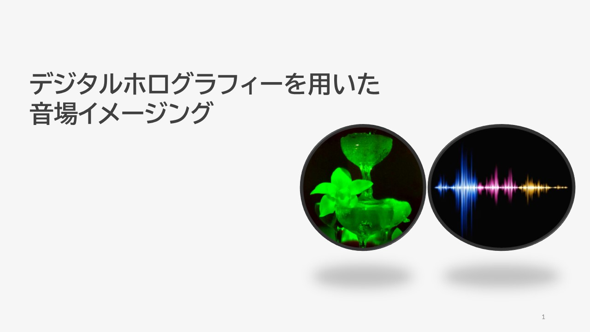
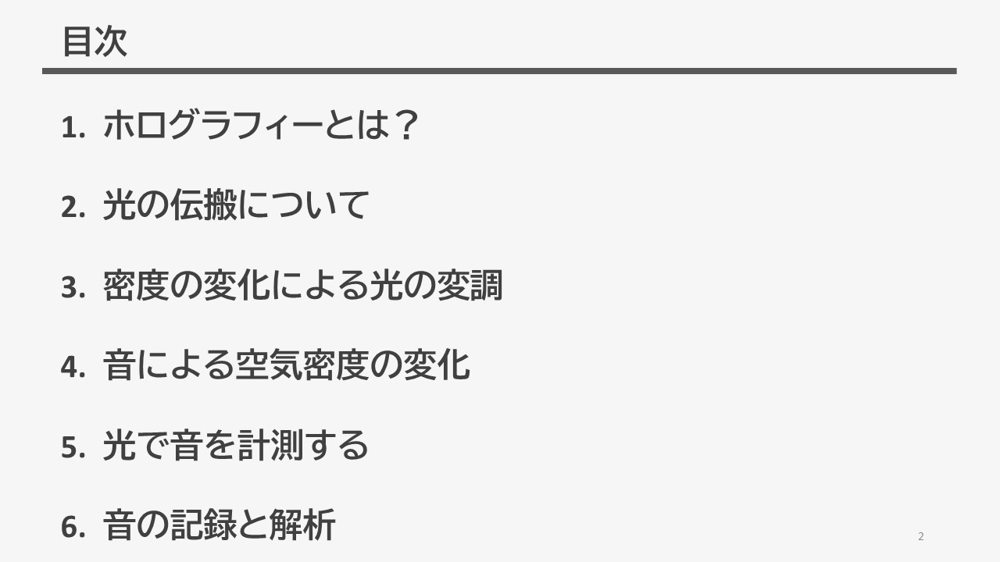
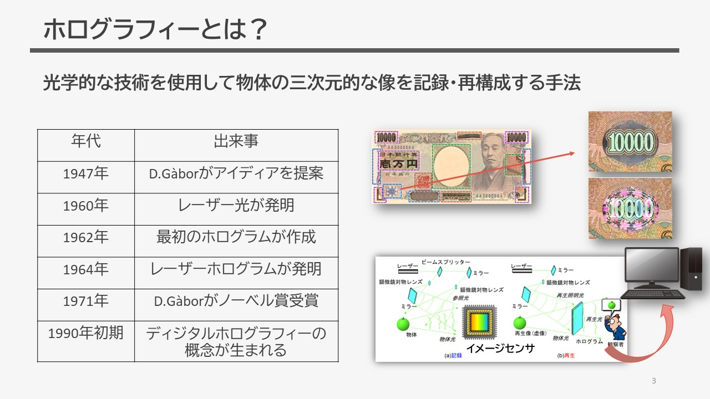
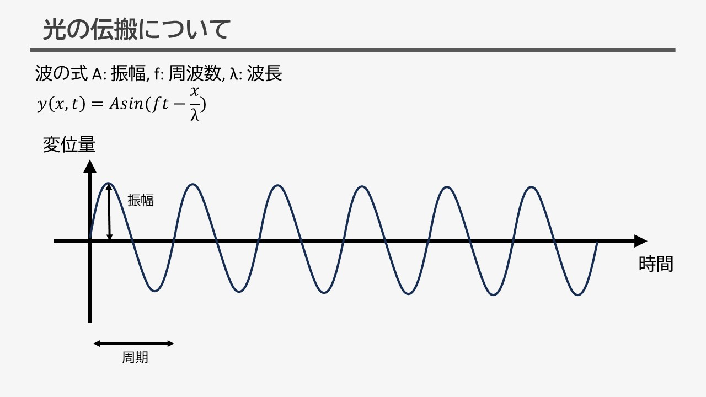
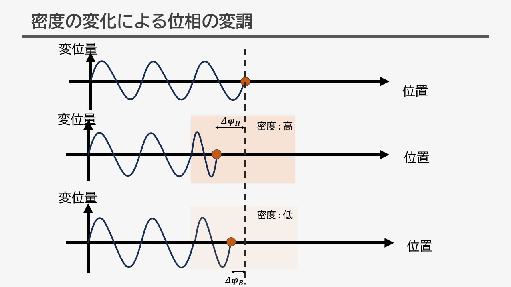
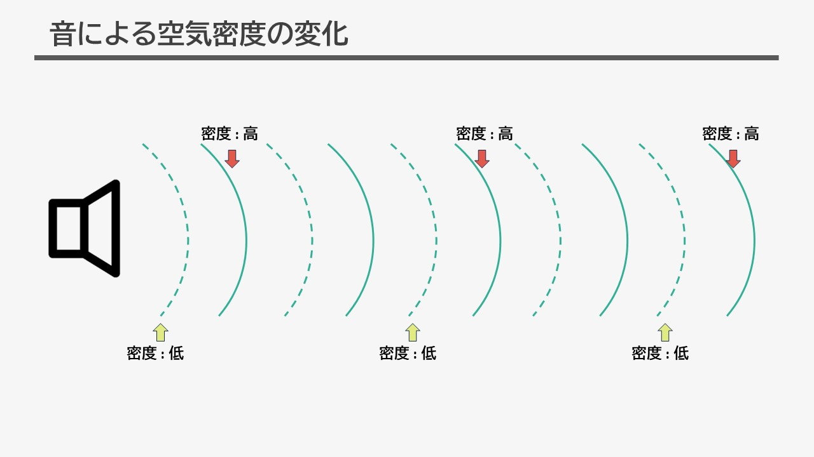
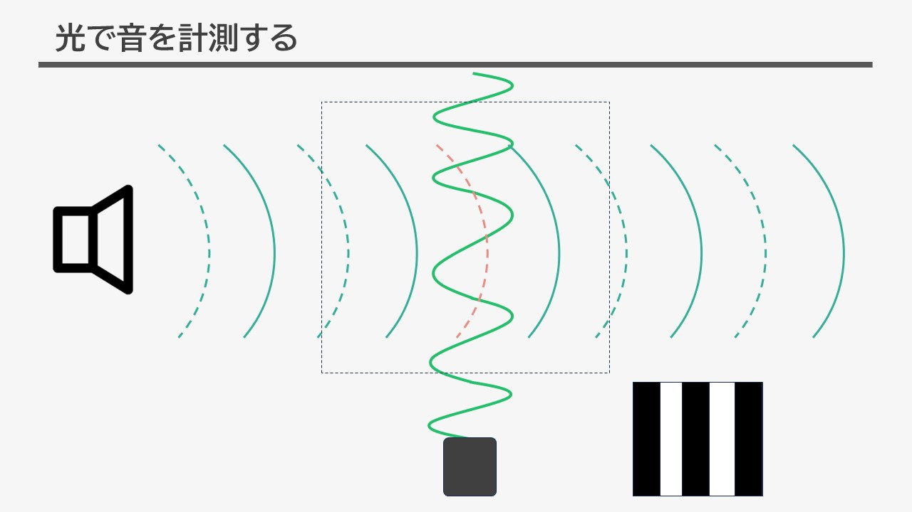
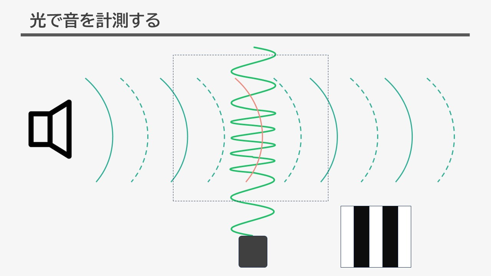
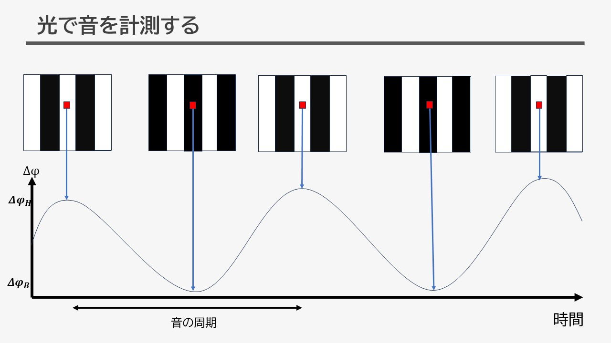
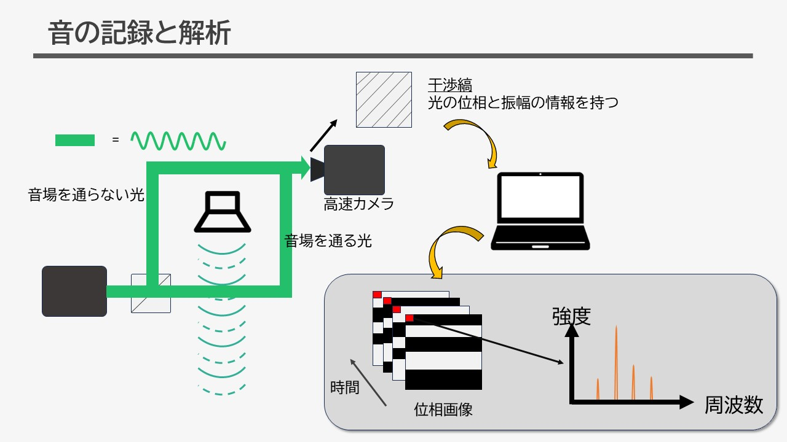

私は現在ディジタルホログラフィーを用いた音場イメージングという研究を行っています。
この研究概要についてスライドを用いて簡単にご説明します。

目次です。

ホログラフィーとは光学的な技術を利用して物体の三次元的な像を記録し、再構成する手法です。
1947年にD.Gàborによってアイディアが発案され、まもなくして最初のホログラムが作成されました。
ホログラムとは、物体を照射する光(物体光)と別の経路を通る光(参照光)を干渉させることで、物体の
三次元情報を感光材に記録したものです。記録されたホログラムに参照光を照射することで
物体の三次元像を得ることが出来ます。複雑な三次元情報を記録できるため、現在は紙幣などで
セキュリティ用途として用いられています。この後、記録する手法が感光材からイメージセンサに、再生する
手法が参照光の照射から計算処理に変化しました。これがデジタルホログラフィーです。

光は波動性を持ち、初期位相を考えない場合上式によって表されます。

続いて、時間を固定したうえで密度の違う空間を通る波について考えてみましょう。
光は通過する媒質の密度によって異なる挙動を示します。例えば、高い密度の空間を通過するとき、
上と中央の図の波を比較した時、同じ周期に中央の波が来るタイミングが大きく遅れている様子が分かります。
また、密度の低いを通過する下の図の波と上の図の波を比較した時同じ周期に下の波が来るタイミングが少し
遅れている様子が分かります。このように波の到達するタイミングが遅れることを位相遅れといいます。

音が発生するとき、周囲の空気に対して圧縮と解放を繰り返し、空気の密度を変化させます。
そして、空気に縦波と呼ばれる波が生まれ、密度の高い空間と低い空間が発生します。

音が発生した空間を光が通過するとき、この密度の違いによって先ほどの位相遅れが大きい空間と小さい空間
が発生します。右下の図は位相遅れが大きい空間を白、小さい空間を黒で表した図です。

こちらは音波が進行したことにより、先ほどとは空気の密度が逆転した状態になっています。
同様に右下に示す位相遅れの大きさも逆転します。

音の発生により、光の位相遅れの大きさが周期的に変化することが分かります。
そして、この周期は音の周波数に一致し、位相遅れの大きさは音圧に関係することが分かります。

ディジタルホログラフィーによって、物体光を参照光を干渉させて光波の位相情報をもつ干渉縞を記録し、ここから
音の周波数や音圧を解析することが可能になります。具体的な研究テーマや応用は今後更新していきます。